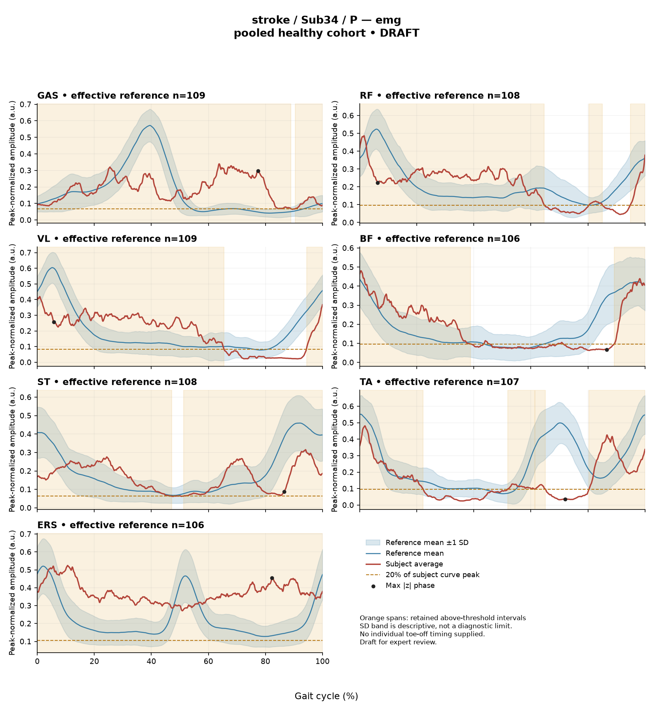

rater1 / Report 64 of 105 / Review spreadsheet row 65
R749F14DE109E0673
Case: stroke_Sub34_P
Read this report independently. Record judgments in the workbook. Browser pages do not save ratings.
Report: exact saved text
# Gait Report Interpretation — Sub34_P **Interpretation version:** limited-evidence-v3.1-candidate **Scope:** Research-level descriptive interpretation of a supplied quantitative summary. This is not a diagnostic assessment and contains no treatment recommendations. --- ## 1. Objective Findings **Participant and side.** Sub34_P is a participant in the stroke cohort. All findings below describe the **paretic side**. The released cycle is defined from initial contact of the paretic limb (0%) to the next initial contact of the same limb (100%); these two endpoints are successive occurrences of that event, not a single instant. No intermediate gait event (including individual toe-off) is supplied, so all timing in this report is expressed as a percentage of the analysis cycle only. **Spatiotemporal values as supplied:** | Measure | Value | |---|---| | Gait speed | 0.22 m/s | | Speed band label | "household ambulator (<0.4 m/s)" | | Cadence | 61.0 steps/min | | Step length symmetry index | +4.2% (successive-footfall definition) | | Composite kinematic deviation score (GPS-like) | 13.82 | The speed band label denotes a numeric speed category only. It does not measure walking independence, safety, assistive-device use, or real-world community mobility, and none of those were supplied. The step length symmetry index is **positive (+4.2%)**. Under the stated sign convention, negative values indicate a shorter paretic step; this positive value therefore indicates the paretic step was **not shorter** than the non-paretic step by this calculation, with a magnitude of 4.2%. The value was computed with the **successive-footfall** definition; the alternative instantaneous definition can yield a different number for some subjects, and that alternative value is not supplied here. **Reference used and its limits.** Kinematic deviation scores for this subject were computed against **138 pooled healthy subjects** (1001 phase points, source: main_cohort_excel). That reference pools both body sides and all ages and is not matched to this participant on age or speed. Critically, the healthy cohort's self-selected speeds span **0.80–1.79 m/s**, and this subject walked at **0.22 m/s** — far below that floor. **No speed-matched healthy reference exists in this dataset for this participant.** Every reference comparison below therefore conflates the effects of very slow walking with any stroke-related control changes, and these two contributions cannot be separated from these data. Differences from the reference are described as differences from that specific empirical reference; they do not by themselves establish a disease effect, a mechanism, a severity level, or a clinical diagnosis. **Available vs. not supplied.** Supplied: sagittal-plane kinematics for ankle, knee, hip and pelvis; ensemble-averaged EMG envelopes and detected intervals for GAS, RF, VL, BF, ST, TA and ERS; two co-contraction indices. **Not supplied in this task:** individual toe-off and other intra-cycle events, muscle-specific matched normal timing references, stride-level variability, raw-signal quality checks, expert plots, coronal/transverse-plane kinematics, age, sex, time post-stroke, clinical stroke scores, and non-paretic-side data. Items not supplied here must not be described as absent from the source release — some (e.g., age, sex, gait events, and stroke-cohort clinical fields) may exist in the release but were not provided to this interpretation. No channel is documented here as a failed or absent recording. --- ## 2. EMG Envelope and Threshold Findings **What these numbers are.** Each row describes one **ensemble-averaged envelope** per muscle. Normalization uses a shared maximum across the available strides for that participant, side and muscle before averaging; individual strides are not rescaled to their own peaks, and the denominator is not shared between sides. Amplitudes are therefore **relative envelope values** — they are not neural activation, force, or strength, and muscles cannot be ranked as stronger or weaker from them. An averaged curve cannot establish stride-to-stride variability, and none of the patterns below can be assumed to occur in every individual stride. "Above-threshold interval" means the region where **this curve's own** averaged envelope exceeds 20% of **its own** peak, with a minimum retained interval of 3% of the cycle. These are properties of the averaged envelope under that specific rule — not physiological onset, offset, contraction duration, or inactivity outside the intervals. An interval written with X > Y wraps the 100%→0% boundary, meaning the mean envelope remained above threshold across the cycle-defining initial-contact boundary. An interval beginning at 0% or ending at 100% is the analysis-window edge, not a physiological onset or offset. | Muscle | Retained interval(s) | Coverage | Boundary | Peak norm. amp. | Max abs. z vs reference | |---|---|---|---|---|---| | GAS | 90%–89% (wraps) | 99% | continuous across boundary | 0.34 | 10.0, above reference, at 77% | | RF | 80%–85%; 95%–65% (wraps) | 75% | continuous across boundary | 0.49 | 2.6, below reference, at 6% | | VL | 94%–65% (wraps) | 71% | continuous across boundary | 0.42 | 3.4, below reference, at 6% | | BF | 89%–39% (wraps) | 54% | continuous across boundary | 0.48 | 1.9, below reference, at 87% | | ST | 51%–47% (wraps) | 99% | continuous across boundary | 0.31 | 2.0, below reference, at 87% | | TA | 52%–61%; 62%–65%; 80%–22% (wraps) | 55% | continuous across boundary | 0.48 | 3.8, below reference, at 72% | | ERS | 0%–100% | 100% | continuous across boundary | 0.52 | 5.2, above reference, at 82% | **Coverage and continuity.** At the mean-envelope level, every recorded muscle here remained above its own 20%-of-peak threshold across the cycle-defining initial-contact boundary. Coverage is high for GAS and ST (99% each) and is reported as 100% for ERS with a single 0%–100% interval. For ERS, the detected interval spans the whole analysis window, which is consistent with no retained below-threshold region under this rule; for GAS and ST, the rounded 99% coverage figures do not by themselves establish whether a below-threshold segment exists, and the remaining fraction cannot be classified from rounded values. RF's envelope yielded two retained intervals (80%–85% and a wrapping 95%–65%), and TA's yielded three (52%–61%, 62%–65%, and a wrapping 80%–22%); short gaps between adjacent retained intervals reflect the threshold-and-duration rule applied to an averaged curve, not documented silence of the muscle. **Amplitudes.** Peak relative envelope amplitudes range from 0.31 (ST) to 0.52 (ERS). Because each curve is scaled to a participant-, side- and muscle-specific maximum across strides, these values are comparable only in the sense described above and carry no force or strength meaning. **Max |z| values.** "Max |z|" is an **extreme-value statistic**: the largest absolute standardized difference across all 1001 phase points, not a single-observation z-score. It marks the phase point of largest standardized difference from the phase-specific reference mean — **not** necessarily the time of peak envelope amplitude, and not a gait event. The conventional 2-SD rule does not apply: in this dataset all 109 healthy controls exceed |z| = 2 on at least one muscle, and per-muscle healthy 95th percentiles for this statistic run from 3.65 (ERS) to 4.61 (TA), higher still under leave-one-out. Against that backdrop, BF (1.9), ST (2.0), RF (2.6), VL (3.4) and TA (3.8) fall within or below the range routinely reached by healthy controls on this statistic; TA's 3.8 is below the 4.61 healthy 95th percentile for TA. GAS (10.0, above the phase-specific reference mean at 77%) and ERS (5.2, above the phase-specific reference mean at 82%) are the two largest standardized differences and exceed the corresponding per-muscle healthy 95th percentiles quoted above. "Above/below reference" here means relative to the **phase-specific reference mean** at that location, not relative to a healthy percentile limit. These pooled percentiles are calibration values, not matched leave-one-out normal limits for this subject. Given the absence of any speed-matched reference, even the largest of these differences cannot be attributed to stroke pathology rather than to walking at 0.22 m/s, and no interval or z-location may be mapped to a gait-phase function such as clearance, push-off or weight acceptance, nor characterized as normal, early, delayed or prolonged. **Co-contraction indices.** CCI is the Falconer–Winter index computed on the **full continuous envelopes** over the whole cycle (2 × common area / summed areas). It is a whole-cycle overlap index of normalized envelopes — not simultaneous activation time, not muscular force, and not a phase-specific result. It can be non-zero even where detected intervals do not overlap, because sub-threshold activity contributes. - **TA vs GAS = 0.52.** The healthy reference interval for this dataset is 0.24–0.59 (median 0.39). This value lies inside that interval, in its upper portion, below the 0.59 upper endpoint. - **RF vs BF = 0.77.** The healthy reference interval is 0.48–0.83 (median 0.68). This value lies inside that interval, above the median and approaching but below the 0.83 upper endpoint. Falling inside these intervals does not establish physiologically normal co-activation or normal muscle function, just as falling outside would not establish pathological co-activation, stiffness, impaired control or a diagnosis. CCI values depend on the normalization and envelope pipeline used here; values or thresholds from other studies or algorithms are not transferable. The same speed- and matching-related limits stated above apply to these comparisons. --- ## 3. Kinematic and Reference Comparisons All joint data are **sagittal plane only**; coronal and transverse channels were not included in this input and cannot be commented on. | Channel | Sagittal ROM | Gait Variable Score | |---|---|---| | Ankle | 17.4° | 13.95 | | Knee | 45.8° | 20.92 | | Hip | 34.8° | 11.35 | | Pelvis | 3.8° | 1.58 | | **Composite (GPS-like, RMS of the above)** | — | **13.82** | The composite score is the RMS of the per-joint Gait Variable Scores over the sagittal channels supplied. It is a "GPS-like" summary, **not** the validated 9-variable Gait Profile Score, and is not interchangeable with it. **Comparison with the supplied composite reference.** The dataset's composite reference has a median of 5.1 and a 95th percentile of 10.7. This subject's 13.82 is above both values. Among the individual channels, the knee GVS (20.92) is the largest, followed by ankle (13.95), hip (11.35) and pelvis (1.58). **What these summary values can and cannot show.** GVS and the GPS-like composite are **magnitude summaries of difference from the stated reference across the cycle**. They do not indicate the direction of the waveform difference (e.g., more flexed vs. more extended), do not localize the difference to any phase of the cycle, and do not identify which feature of the curve drives the score. Consequently, the relative ordering of the joint scores indicates where the summed difference from this reference is largest, not which joint is clinically most impaired. **ROM.** The reported ROM values describe the sagittal excursion of each averaged joint curve. ROM alone does not establish a clinical restriction in the absence of an appropriate matched comparison, and no ROM-specific reference values were supplied here. The pelvic sagittal excursion of 3.8° and the knee excursion of 45.8° are reported as measured; neither is classified in this report. **Reference limitation, restated for the kinematic comparison.** The comparison uses a pooled 138-subject healthy cohort that mixes sides and ages and does not include anyone walking as slowly as 0.22 m/s. Pooled calibration percentiles such as the composite 95th percentile of 10.7 are **not** matched leave-one-out normal limits for this participant. The composite value above that percentile therefore documents a difference from this particular empirical reference under conditions of poor comparability; it does not by itself establish disease effect, severity, or a clinical diagnosis, and the contributions of very slow walking versus stroke-related changes cannot be separated from these data. These same limits would apply to a control participant compared in this way. --- ## 4. Questions for Further Clinical Assessment The following are open questions raised by the limits of this dataset. None presupposes that the mechanism or measurement issue named has already been observed, and none implies a recommended intervention. 1. **Event timing.** Would obtaining this participant's individual gait events (including paretic toe-off) and muscle-specific matched timing references allow any of the detected envelope intervals to be placed relative to intra-cycle events, rather than only as percentages of the analysis cycle? 2. **Speed comparability.** Is a speed-appropriate comparison group (or a within-subject repeat at a controlled speed) available or obtainable, so that differences currently confounded by a 0.22 m/s walking speed could be examined separately from other contributions? 3. **Stride-level behaviour.** Do stride-by-stride envelopes exist in the release for this participant, and if examined, would they show whether the averaged high-coverage patterns (e.g., GAS 99%, ST 99%, ERS 100%) are reproduced in individual strides or arise from averaging across strides with differing profiles? 4. **Signal quality.** Have raw-signal quality checks been performed for the channels with the largest standardized differences (GAS, ERS)? Is there any question of movement artefact, crosstalk, baseline drift, electrode placement, or normalization-denominator effects that could contribute to a high-coverage, high-|z| envelope, and can these be assessed from the source recordings? 5. **Step-length definition.** Would recomputing the step length symmetry index using the instantaneous definition change the +4.2% value materially for this participant, and which definition is preferred for the intended comparison? 6. **Out-of-plane and contralateral data.** Are coronal/transverse kinematics and non-paretic-side EMG and kinematics available in the release? Their absence from this input limits interpretation to sagittal, paretic-side findings only. 7. **Clinical context.** Are cohort fields such as age, sex, time post-stroke and clinical stroke scores available for this participant? Correlating these quantitative summaries with a clinical examination would be necessary before any of the above differences could be given clinical meaning. --- **Summary caution.** This report describes averaged-envelope and sagittal-kinematic summary measures for one paretic limb, compared with a pooled, unmatched healthy reference with no speed overlap. The detected intervals, coverage values, CCI values, GVS/GPS-like scores and max |z| locations are properties of this processing pipeline and this reference. They do not establish physiological onset/offset, contraction or inactivity, force or strength, phase-specific function, stride-to-stride variability, normal or abnormal muscle control, or any clinical diagnosis.
Requirements for this report
Fill the corresponding Coverage rows in the workbook. G03 is included once. These are the approved requirements, not prefilled judgments.
| Excel row | ID | Required content | Components / optional content |
|---|---|---|---|
| 333 | R115 | Describe walking speed 0.22 m/s and that it is below the stated 0.80 m/s reference floor; no reference at this speed is supplied. | AND: displayed speed and that it lies below the 0.80 m/s reference floor, so no speed-supported healthy reference exists in this dataset. Optional: cadence, speed-band label (not a functional claim). One sentence may also serve the comparability half of G03. |
| 334 | R116 | Identify the knee as the leading GVS difference AND another lower-limb difference using ankle OR hip. Exact GVS values are optional; identify the findings as reference-relative sagittal summary differences. | AND: knee as leading AND (ankle OR hip). Stating which joint is larger is optional; asserting the reverse order is an error. Exact GVS values are optional; no waveform direction, phase or restriction is required. |
| 335 | R117 | Describe GAS envelope above its phase-specific reference mean at approximately 77% of the analysis cycle (displayed max |z| 10.0). Within each route, muscle identity AND mean-relative direction AND approximate cycle location are required. Exact max-|z| repetition is optional. | Required for each route: muscle identity AND direction relative to the phase-specific reference mean AND approximate cycle location. Optional: exact max |z| value, comparison with the supplied endpoint span (descriptive only). Prohibited: percentile classification, gait phase, physiological onset, severity. |
| 336 | R118 | Describe EITHER the ERS envelope above its phase-specific reference mean at approximately 82% of the analysis cycle (displayed max |z| 5.2), OR the TA envelope below its phase-specific reference mean at approximately 72% (displayed max |z| 3.8), OR the VL envelope below its phase-specific reference mean at approximately 6% (displayed max |z| 3.4). One complete route suffices. Within each route, muscle identity AND mean-relative direction AND approximate cycle location are required; exact magnitudes are optional. | OR: three routes. Required for each route: muscle identity AND direction relative to the phase-specific reference mean AND approximate cycle location. Optional: exact max |z| value, comparison with the supplied endpoint span (descriptive only). Prohibited: percentile classification, gait phase, physiological onset, severity. A below-mean finding must not be read as weakness. |
| 337 | R120 | Describe the supplied successive-footfall step-length index 4.2% and its meaning: the paretic step is longer. | AND: displayed index and the direction supported by its sign. Optional: formula, definition wording. Acceptable phrasing for small displayed values: "a small difference with the paretic step slightly shorter/longer" (not a cutoff). Prohibited: restating the index as a percentage shortening (E01), severity grades, whole-gait symmetry generalization (E07 issue, not an omission). |
| 338 | G03 | Express a meaningful limitation of reference comparability AND why the comparison cannot establish disease effects or clinical diagnosis; for controls it cannot establish disease or overall normality. One statement may also support a case requirement. | AND: comparability and inference limitations |
Exact model input: system instruction
Draft a research gait-report interpretation for a physical therapist or physiatrist using only the supplied quantitative summary. This is a limited-evidence interpretation task, not diagnosis or treatment selection. Rules: - Describe the participant's actual group and side, available findings, and missing channels accurately. Healthy-group membership does not prove normal physiology; deviations from an empirical reference do not by themselves establish disease. - Treat detected EMG intervals and coverage as properties of an averaged envelope under the stated threshold and duration rule. Do not convert them into physiological onset, offset, duration, continuous contraction, or inactivity outside the intervals. You may describe reported coverage, retained intervals and boundary continuity at the mean-envelope level. Do not infer the same pattern in every individual stride. Say no below-threshold segment only when the supplied evidence establishes that; a rounded coverage value or no retained interval alone does not establish it. - Individual toe-off and matched muscle-specific timing references are not supplied in this task. Use percentages of the analysis cycle. When the input explicitly identifies an initial-contact boundary, you may name that boundary or describe numerical proximity to it. Do not assign stance/swing, loading response, pre-swing, mid-stance or another event to a percentage, or substitute a conventional 60% split. Anatomical muscle actions may be named, but do not map an interval to a gait-phase function such as clearance, push-off or weight acceptance. Do not characterize timing as normal, early, delayed or prolonged without the required evidence. - Respect the supplied normalization method. Relative envelope amplitude is not strength or force, and average curves do not establish stride-to-stride variability. - Report CCI as a whole-cycle overlap index of normalized EMG envelopes. You may compare it with the supplied empirical interval or a supplied median, including proximity to an endpoint. Do not invent an unavailable median. Being within that interval does not establish physiologically normal co-activation or normal muscle function; being outside it does not establish pathological co-activation, stiffness, impaired control or a diagnosis. CCI is not simultaneous activation time, muscular force or a phase-specific result. It depends on normalization and envelope methods; do not transfer values or thresholds from other studies or algorithms. - Describe GVS and GPS-like as summary differences from the stated reference. Neither localizes waveform direction or phase; ROM alone does not establish a clinical restriction without an appropriate comparison. Do not treat pooled calibration percentiles as matched leave-one-out normal limits. - Where using a reference comparison, convey both limited comparability and the inability to establish a disease effect or clinical diagnosis from that comparison. One clear explanation per report is enough; age and speed need not be recited as separate checklist words. A speed inside an overall range does not prove that an appropriate matched reference exists. Apply these limits to controls as well. - The location of maximum |z| is the largest standardized difference from the reference, not necessarily the time of peak envelope amplitude or a gait event. Above/below reference in an EMG row means relative to the phase-specific reference mean at that location, not relative to a healthy percentile limit. - Preserve numerical direction and the displayed precision. Do not invent values, clinical severity grades, statistical significance, or unavailable reference values. Descriptive comparisons with supplied values remain allowed. Near-boundary rounded values do not justify classifying hidden unrounded values. - Clinical follow-up questions may ask whether a mechanism or measurement issue exists; do not presuppose it has already been observed. Do not recommend treatment. If EMG is unavailable, section 2 may simply state that envelope timing, amplitude and CCI cannot be assessed. Reference-only plots do not provide patient EMG. Use exactly these four sections: 1. Objective Findings 2. EMG Envelope and Threshold Findings 3. Kinematic and Reference Comparisons 4. Questions for Further Clinical Assessment
Exact model input: case summary
Candidate interpretation version: limited-evidence-v3.1-candidate
Draft the four-section report using only this subject's supplied evidence.
Metric definitions (read before interpreting any number below):
- All joint angles and ROM values are SAGITTAL PLANE only. Coronal/transverse data are not included.
- The released EMG curves are ensemble-averaged envelopes. For each participant and recorded muscle, normalization uses a shared maximum across the available strides before averaging; individual strides are not independently rescaled to their own peaks. This pipeline uses the released mean curves without further amplitude normalization. In the checked stroke release, the denominator is participant-, side-, and muscle-specific; it is not shared between sides. The local array audit verified 614 evaluable combinations, not all 700; 86 lacked valid nonzero paired samples. Amplitudes are relative envelope values, not absolute neural activation, force, or strength. Do not rank muscles as stronger or weaker from these amplitudes, or infer stride-to-stride variability from an average curve.
- Above-threshold intervals are the regions where the averaged envelope exceeds 20% of that curve's own peak, minimum retained interval 3% of the cycle (by sample count). An interval written as (X%-Y%) with X > Y wraps across the 100%->0% cycle boundary (envelope remains above threshold across the cycle-defining event). An onset of 0% is the analysis-window boundary, not necessarily a physiological onset. "No interval detected" means no region met the threshold + duration criteria; it does NOT mean the muscle is inactive or non-functional.
- CCI is the Falconer-Winter co-contraction index computed on the full continuous envelopes (2*common area / summed areas), so it can be non-zero even when the DETECTED burst intervals of the pair do not overlap (sub-threshold activity contributes).
- The composite kinematic deviation score is the RMS of the per-joint Gait Variable Scores over the sagittal channels provided ("GPS-like", not the validated 9-variable GPS).
- Step length symmetry index: 200*(paretic - non-paretic)/(paretic + non-paretic), in %. NEGATIVE means the paretic-side step is SHORTER. Two operational step-length definitions exist (successive-footfall: each heel's position at its own initial contact; instantaneous: both heels at the same instant) and give different values for some subjects -- the definition actually used is stated next to the symmetry value.
- "Max |z| deviation" is the LARGEST absolute z-score across all 1001 phase points of the cycle, comparing this curve to the healthy-cohort mean/SD at each phase. This is an extreme-value statistic, NOT a single-observation z-score: in this dataset every one of 109 healthy controls exceeds |z| = 2 on at least one muscle, and per-muscle healthy 95th percentiles for this statistic run 3.65 (ERS) to 4.61 (TA) -- higher still under leave-one-out. Do not label a value abnormal by the conventional 2-SD rule; use the healthy reference range given per muscle where provided.
- Healthy-cohort CCI reference (this dataset): RF-vs-BF median 0.68 (2.5th-97.5th pct 0.48-0.83); TA-vs-GAS median 0.39 (0.24-0.59). Composite score reference: median 5.1, 95th percentile 10.7.
- COHORT BACKGROUND (calibration context, not necessarily the exact reference used for this subject -- the actual reference composition is stated in a dedicated line with the subject data below): the full healthy cohort is 138 subjects for kinematics, effective n = 106-109 per muscle for EMG (29 controls have no usable EMG; completeness varies by age), pooling both body sides and all ages; it is not age- or speed-matched to this subject. A leave-one-out run uses one subject fewer than these counts.
- SPEED SUPPORT LIMIT (applies to most stroke subjects in this dataset): the healthy reference cohort's self-selected walking speeds span 0.80-1.79 m/s. If this subject's gait speed is below 0.80 m/s, NO speed-matched healthy reference exists in this dataset -- 41 of the 50 stroke subjects are below that floor. Deviations from the reference then conflate slow-walking effects with stroke-specific control changes, and the two cannot be separated from these data. Describe deviations from the reference as such; do not attribute them wholly to stroke pathology.
- Additional source fields are outside this input. Age, sex and gait events may be available in the release; time post-stroke, stroke clinical scores and a non-paretic-side designation apply only to the stroke cohort, as applicable. Do not claim every listed field exists for every participant. Distinguish not supplied, not applicable and documented absent recordings.
The released paretic-side cycle runs from initial contact of that limb at 0% to its next initial contact at 100%. The cycle boundary may be called initial contact; the endpoints are successive occurrences, not one instant. No intermediate event or phase boundary is supplied.
Model-visible information boundary: the summary contains mean-curve metrics and algorithm-detected intervals, not individual toe-off, matched normal muscle timing, stride-level variability, raw-signal quality checks, or expert plots. Information not supplied here must not be described as absent from the source dataset. Gait-cycle percentages alone do not identify gait phases.
Subject: Sub34_P (group: stroke, affected side: paretic)
Gait speed: 0.22 m/s (household ambulator (<0.4 m/s)) [The ambulation label denotes a speed band only, not measured walking independence, safety or real-world community mobility.]
Cadence: 61.0 steps/min
Step length symmetry index: 4.2% (step-length definition: successive_footfall)
Composite kinematic deviation score (GPS-like): 13.82
Deviation reference actually used for this subject: 138 healthy subjects (pooled), 1001 phase points, source: main_cohort_excel.
EMG envelope findings:
- GAS: above-threshold interval(s) 90%-89% (wraps cycle boundary), 99% of cycle above threshold, above threshold across cycle boundary, peak normalized amplitude 0.34, max |z| vs healthy reference: 10.0 (above reference, at 77% of cycle)
- RF: above-threshold interval(s) 80%-85%; 95%-65% (wraps cycle boundary), 75% of cycle above threshold, above threshold across cycle boundary, peak normalized amplitude 0.49, max |z| vs healthy reference: 2.6 (below reference, at 6% of cycle)
- VL: above-threshold interval(s) 94%-65% (wraps cycle boundary), 71% of cycle above threshold, above threshold across cycle boundary, peak normalized amplitude 0.42, max |z| vs healthy reference: 3.4 (below reference, at 6% of cycle)
- BF: above-threshold interval(s) 89%-39% (wraps cycle boundary), 54% of cycle above threshold, above threshold across cycle boundary, peak normalized amplitude 0.48, max |z| vs healthy reference: 1.9 (below reference, at 87% of cycle)
- ST: above-threshold interval(s) 51%-47% (wraps cycle boundary), 99% of cycle above threshold, above threshold across cycle boundary, peak normalized amplitude 0.31, max |z| vs healthy reference: 2.0 (below reference, at 87% of cycle)
- TA: above-threshold interval(s) 52%-61%; 62%-65%; 80%-22% (wraps cycle boundary), 55% of cycle above threshold, above threshold across cycle boundary, peak normalized amplitude 0.48, max |z| vs healthy reference: 3.8 (below reference, at 72% of cycle)
- ERS: above-threshold interval(s) 0%-100%, 100% of cycle above threshold, above threshold across cycle boundary, peak normalized amplitude 0.52, max |z| vs healthy reference: 5.2 (above reference, at 82% of cycle)
Co-contraction indices:
- TA_vs_GAS: CCI = 0.52
- RF_vs_BF: CCI = 0.77
Joint kinematic findings (sagittal plane):
- AnkleAngles: range of motion 17.4 deg, Gait Variable Score 13.95
- KneeAngles: range of motion 45.8 deg, Gait Variable Score 20.92
- HipAngles: range of motion 34.8 deg, Gait Variable Score 11.35
- PelvisAngles: range of motion 3.8 deg, Gait Variable Score 1.58Reference context for expert review
# Reference context: stroke/Sub34_P Mean/SD reference: 138 controls; method pooled; exclusions: []. Effective reference counts: GAS=109, RF=108, VL=109, BF=106, ST=108, TA=107, ERS=106, AnkleAngles=138, KneeAngles=138, HipAngles=138, PelvisAngles=138. The exact system and user input files define what the model receives. The EMG and kinematic plots are supplementary expert evidence, not model inputs. The plotted mean plus/minus one SD is descriptive, not a clinical normal band. Negative lower EMG bands can result from mean minus SD; they do not imply negative recorded EMG. The max-|z| p95 span in the input is pooled calibration context. Complete muscle-specific LOO thresholds are not supplied; an appropriately indeterminate classification is allowed. Controls are excluded from their own mean/SD reference, but cohort-level calibration has prior reference-data reuse. It is not an independent matched clinical limit. GPS-like is a four-channel sagittal composite, not the validated nine-variable GPS. The pooled median/p95 background is not a matched LOO normality boundary. CCI uses continuous normalized envelopes over the whole analysis cycle. An empirical interval comparison does not establish normal muscle function. Threshold intervals and rounded coverage describe the averaged envelope. Rounded 100% coverage and one interval do not prove absence of short below-threshold gaps. Use the group-specific cycle and normalization provenance in the actual input. No individual intermediate gait events or matched normal muscle timing are supplied. Administrative age and published bilateral speed are not added to this input. Expert-visible plots do not justify requiring unseen direction, phase or morphology. For a new-case requirement, cite exact input evidence. Select clinically useful descriptive content without inferring a diagnosis or severity from rank alone.
EMG and kinematic curves
The curves are supplementary expert evidence. Only the saved text inputs were supplied to the model; do not require curve-only observations.
EMG

Kinematics